#1 · 1708 東鹼2026-09-21 09:00 → 09-23 09:00
-1.77%
entry 50.50 stop 49.61 (−0.89) target 52.29 exit 49.61 stop -0.89 突破高 51.50 @ 09-18 09:00 MA60 49.76 破底深度 6.6% fwd +1d +0.20% +3d -0.99% +5d +3.37%
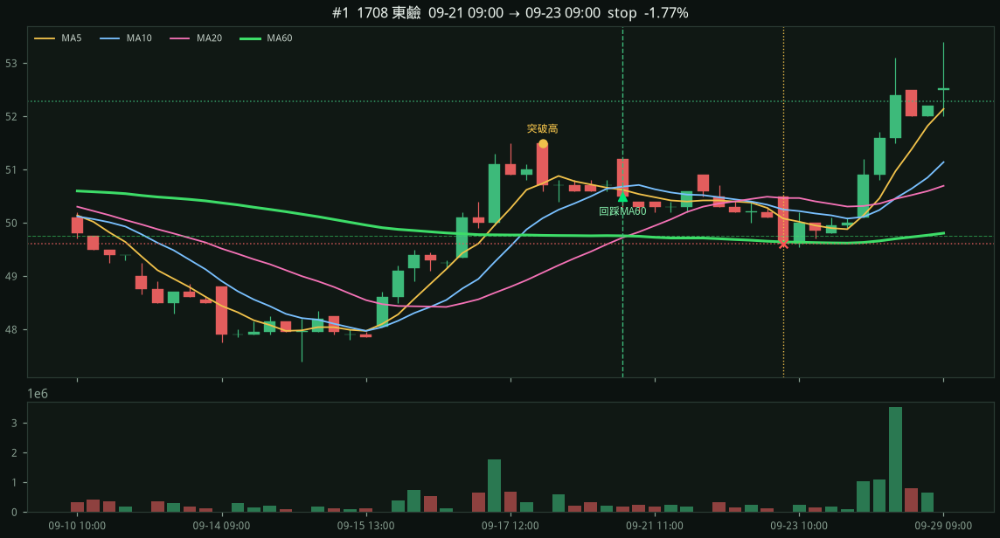
基準日 20261002 · 掃描 169 檔 · 成交額末名約 4.0 億
晶心科型：先在 MA60 下面待 ≥ 12 根且深度 ≥ 3.5%，收盤站上（站上那根不能已離開 3.5%），拉開 ≥ 3% 再回踩均線附近。不要右上角追價。
回測出場：停在回踩低（至少 0.8%）、2R、或 20 根時間停。加總％是各筆報酬相加，不是組合複利。
漏斗：站上 861 → 成波 205 → 有延伸 131 → 全區間進場 95 → 本週 29
· 太短 608 · 不夠深 34 · 站上已噴 14
· 轉空 87 · 回踩逾時 2 · 延伸被追上 9
出場：2R 8 · 停損 16 · 時間 0 · 未平 5
· 收盤後 +1d -0.07% · +3d +0.46% · +5d +3.19%
entry 50.50 stop 49.61 (−0.89) target 52.29 exit 49.61 stop -0.89 突破高 51.50 @ 09-18 09:00 MA60 49.76 破底深度 6.6% fwd +1d +0.20% +3d -0.99% +5d +3.37%

entry 560.00 stop 550.34 (−9.66) target 579.31 exit 579.31 target +19.31 突破高 579.00 @ 09-21 09:00 MA60 552.00 破底深度 7.0% fwd +1d -0.36% +3d +1.96% +5d -1.79%
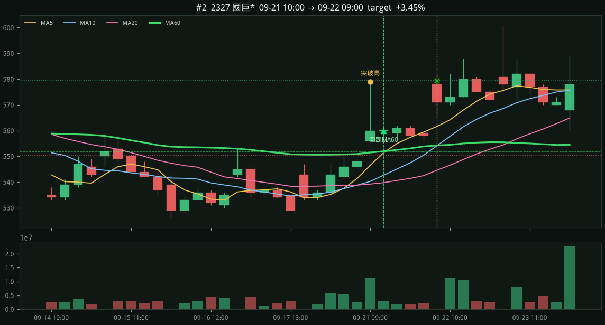
entry 545.00 stop 533.15 (−11.85) target 568.71 exit 533.15 stop -11.85 突破高 554.00 @ 09-21 09:00 MA60 534.75 破底深度 15.7% fwd +1d +0.18% +3d -4.40% +5d -3.12%
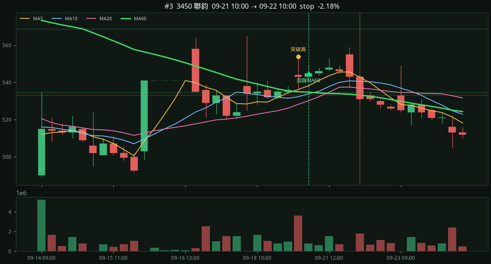
entry 14.35 stop 14.11 (−0.24) target 14.83 exit 14.83 target +0.48 突破高 14.70 @ 09-21 09:00 MA60 14.15 破底深度 5.6% fwd +1d +3.48% +3d +3.48% +5d +3.83%
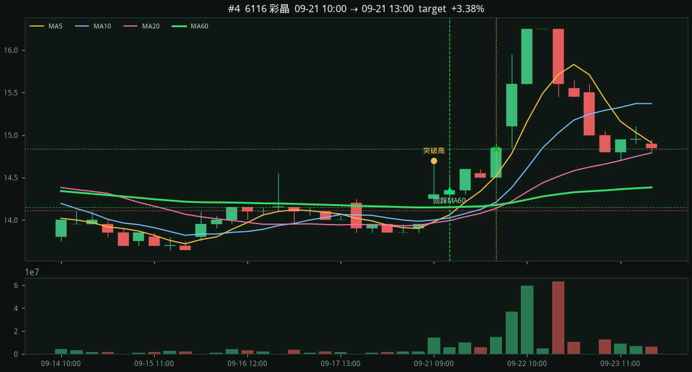
entry 42.75 stop 42.14 (−0.61) target 43.96 exit 43.96 target +1.21 突破高 45.45 @ 09-17 09:00 MA60 42.27 破底深度 5.0% fwd +1d -0.94% +3d +1.99% +5d +2.34%
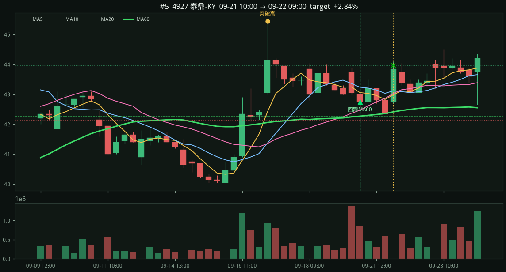
entry 434.50 stop 427.85 (−6.65) target 447.79 exit 447.79 target +13.29 突破高 444.50 @ 09-21 09:00 MA60 429.14 破底深度 12.7% fwd +1d -1.84% +3d -5.18% +5d -3.22%
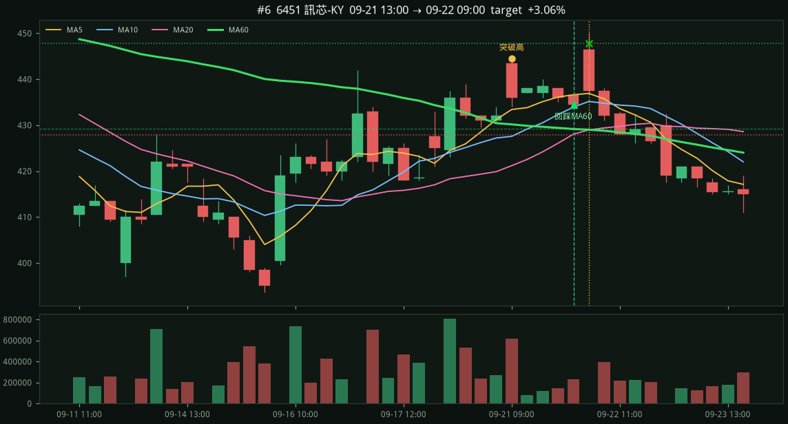
entry 41.40 stop 40.80 (−0.60) target 42.61 exit 40.80 stop -0.60 突破高 43.05 @ 09-17 09:00 MA60 40.92 破底深度 6.2% fwd +1d -1.21% +3d -0.60% +5d -1.57%
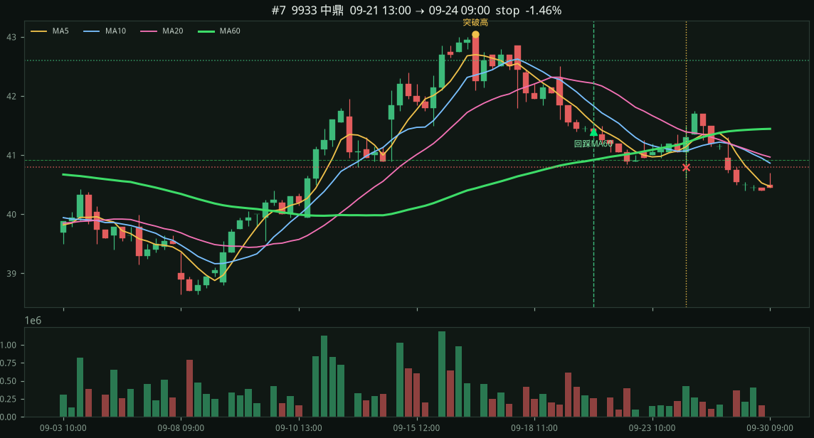
entry 287.00 stop 284.70 (−2.30) target 291.59 exit 284.70 stop -2.30 突破高 299.50 @ 09-22 09:00 MA60 285.70 破底深度 10.4% fwd +1d -1.22% +3d +0.00% +5d -2.26%
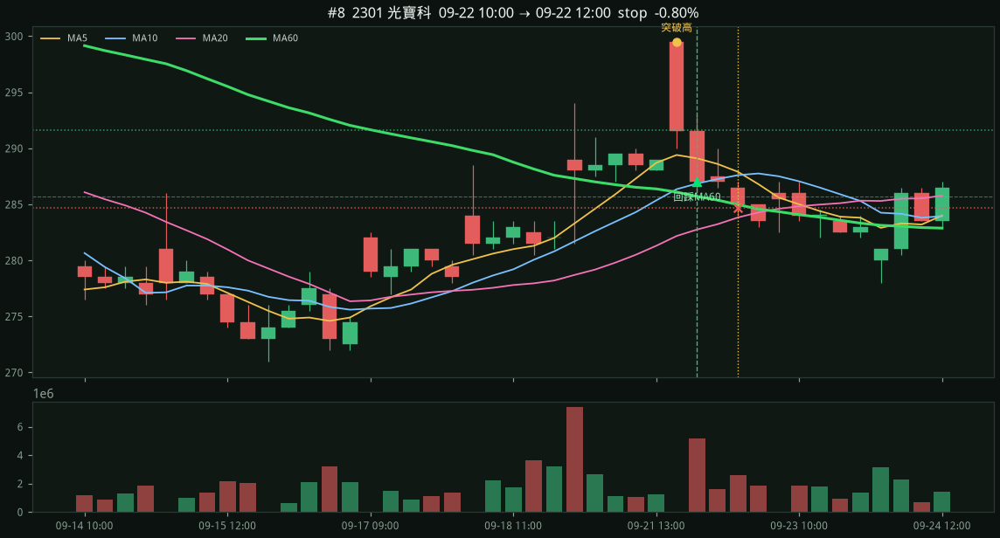
entry 37.40 stop 37.10 (−0.30) target 38.00 exit 37.10 stop -0.30 突破高 38.60 @ 09-22 09:00 MA60 37.39 破底深度 6.0% fwd +1d -0.80% +3d -2.01% +5d +2.94%
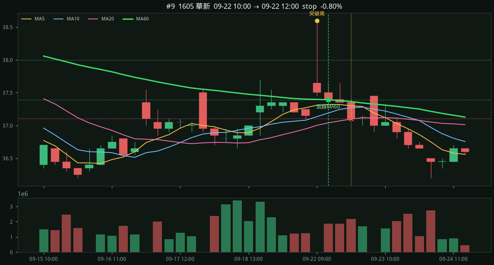
entry 191.00 stop 188.99 (−2.01) target 195.02 exit 188.99 stop -2.01 突破高 196.00 @ 09-22 09:00 MA60 189.56 破底深度 15.2% fwd +1d -0.52% +3d -3.93% +5d -0.26%
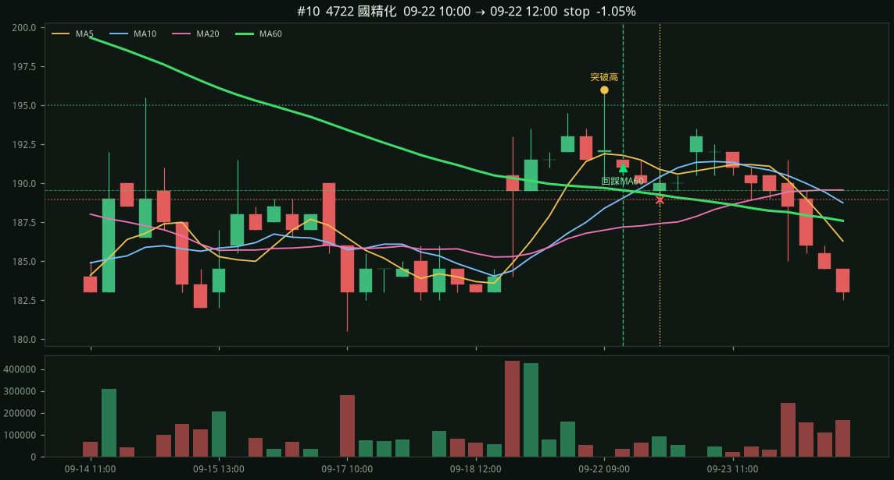
entry 495.00 stop 487.64 (−7.36) target 509.72 exit 487.64 stop -7.36 突破高 505.00 @ 09-22 09:00 MA60 489.11 破底深度 6.4% fwd +1d -1.01% +3d -3.74% +5d +2.63%
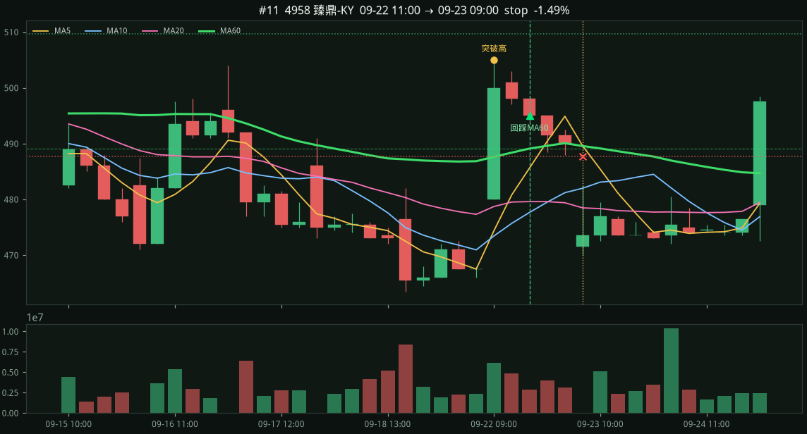
entry 191.50 stop 189.32 (−2.18) target 195.86 exit 189.32 stop -2.18 突破高 201.00 @ 09-22 09:00 MA60 189.89 破底深度 12.5% fwd +1d -0.52% +3d +1.57% +5d +0.78%
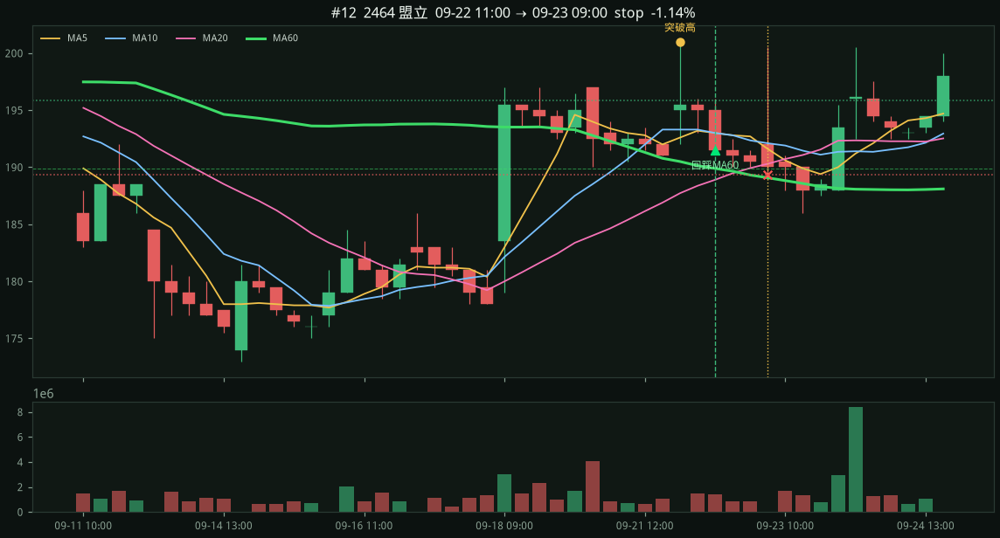
entry 46.50 stop 45.77 (−0.73) target 47.96 exit 45.77 stop -0.73 突破高 48.30 @ 09-17 11:00 MA60 45.91 破底深度 7.7% fwd +1d -0.22% +3d -2.15% +5d -2.15%
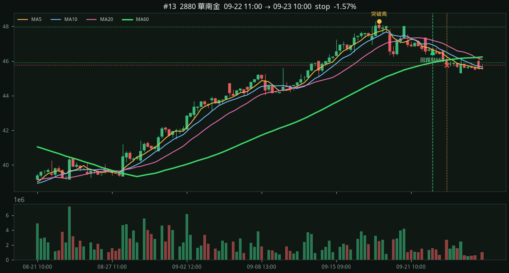
entry 47.50 stop 46.73 (−0.77) target 49.03 exit 46.73 stop -0.77 突破高 51.00 @ 09-21 10:00 MA60 46.87 破底深度 5.3% fwd +1d -0.11% +3d -0.53% +5d +2.95%
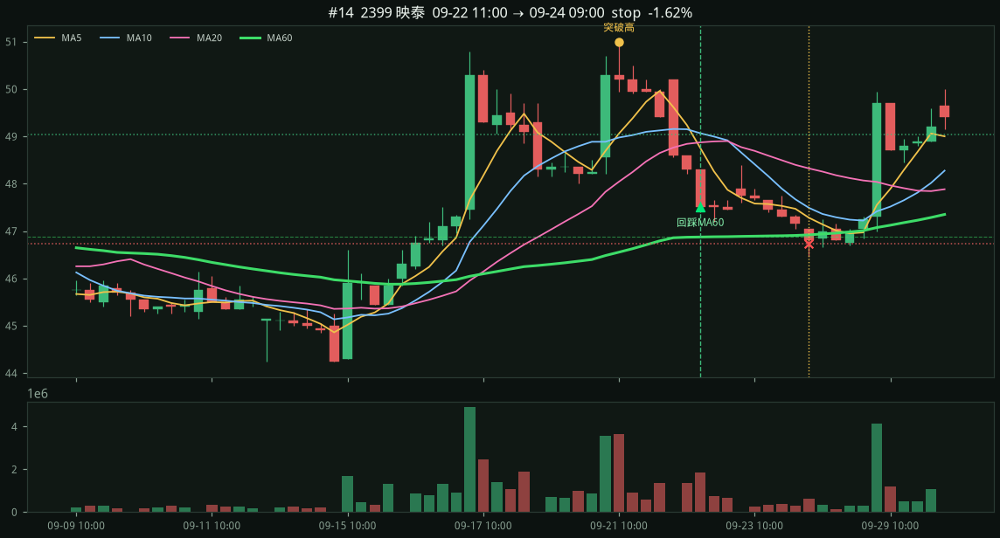
entry 72.30 stop 71.27 (−1.03) target 74.36 exit 71.27 stop -1.03 突破高 74.70 @ 09-22 09:00 MA60 71.49 破底深度 6.2% fwd +1d -0.55% +3d -0.69% +5d +4.15%
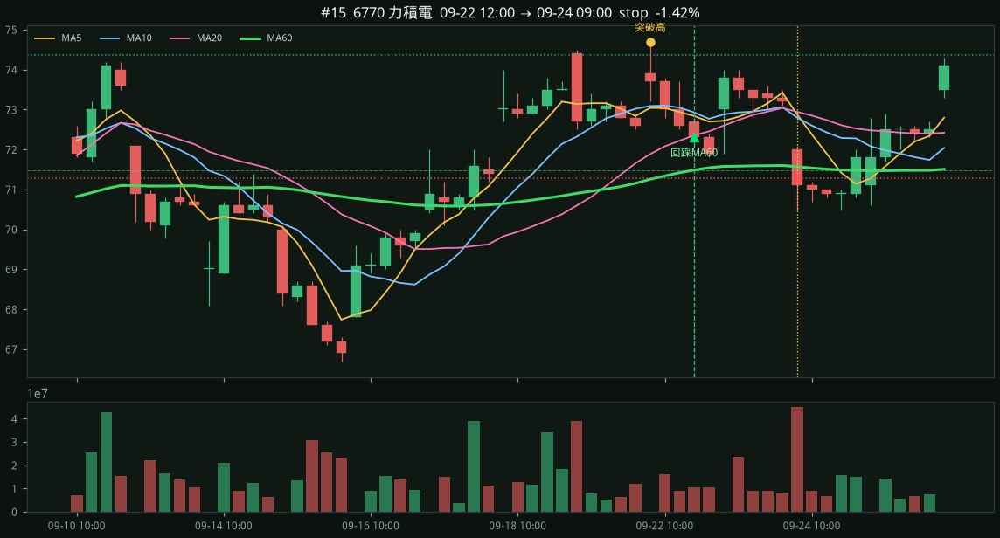
entry 126.00 stop 123.10 (−2.90) target 131.81 exit 123.10 stop -2.90 突破高 130.00 @ 09-22 12:00 MA60 123.47 破底深度 4.5% fwd +1d +0.00% +3d -0.79% +5d +1.59%
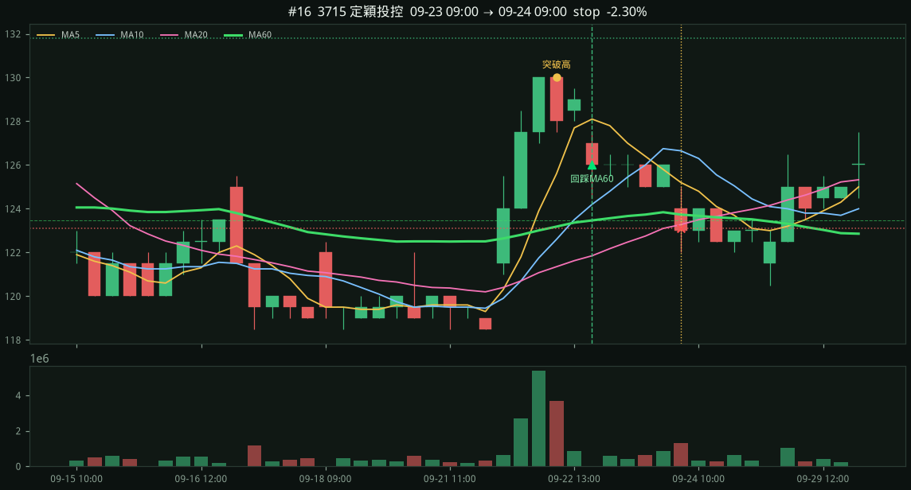
entry 231.00 stop 228.58 (−2.42) target 235.84 exit 235.84 target +4.84 突破高 239.00 @ 09-22 09:00 MA60 229.27 破底深度 10.6% fwd +1d +0.00% +3d +1.30% +5d +1.95%
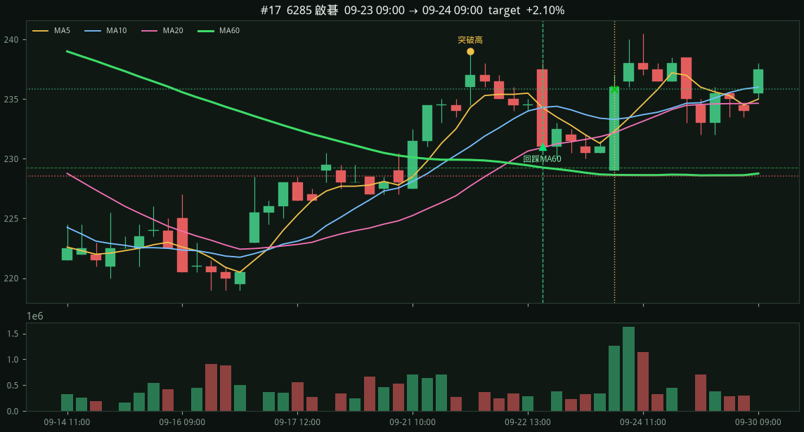
entry 217.50 stop 213.23 (−4.27) target 226.05 exit 213.23 stop -4.27 突破高 225.50 @ 09-23 09:00 MA60 213.87 破底深度 7.4% fwd +1d -0.46% +3d -1.84% +5d +4.14%
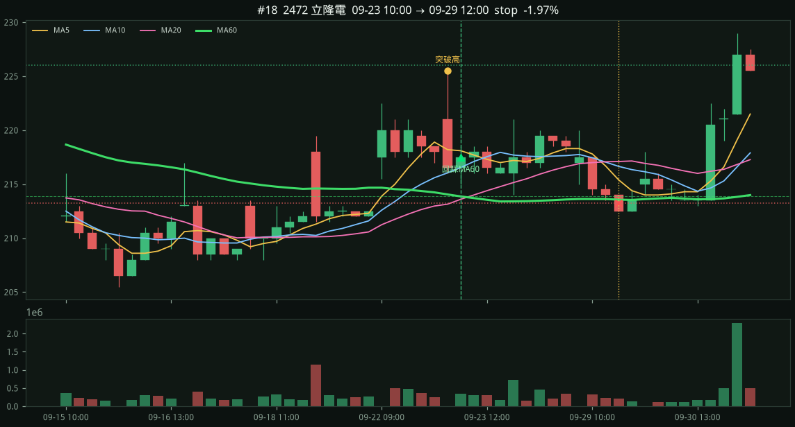
entry 252.00 stop 247.55 (−4.45) target 260.91 exit 260.91 target +8.91 突破高 278.50 @ 09-22 09:00 MA60 248.29 破底深度 14.4% fwd +1d -0.60% +3d +20.44% +5d +45.44%
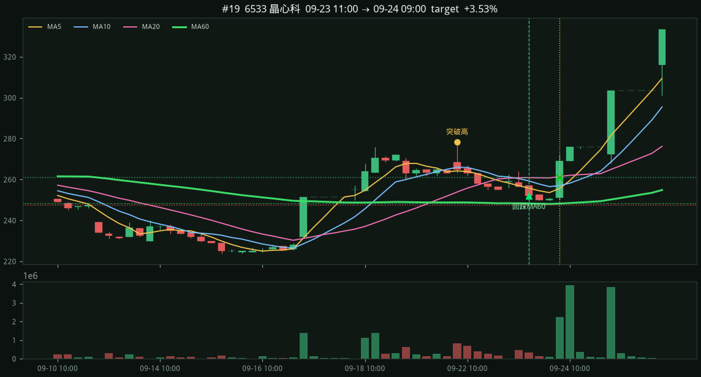
entry 41.00 stop 40.43 (−0.57) target 42.14 exit 40.43 stop -0.57 突破高 45.50 @ 09-21 09:00 MA60 40.55 破底深度 11.7% fwd +1d -0.12% +3d +0.24% +5d -0.85%
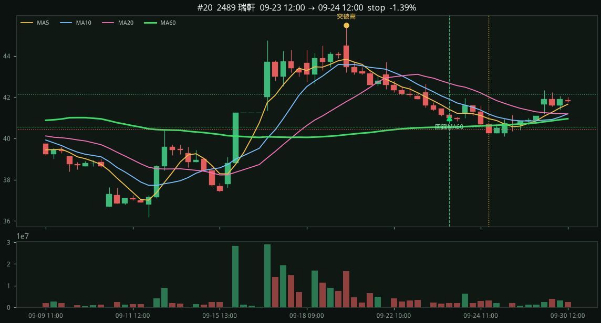
entry 462.00 stop 453.15 (−8.85) target 479.69 exit 479.69 target +17.69 突破高 484.00 @ 09-22 10:00 MA60 454.52 破底深度 9.8% fwd +1d +0.65% +3d +6.71% +5d +6.17%
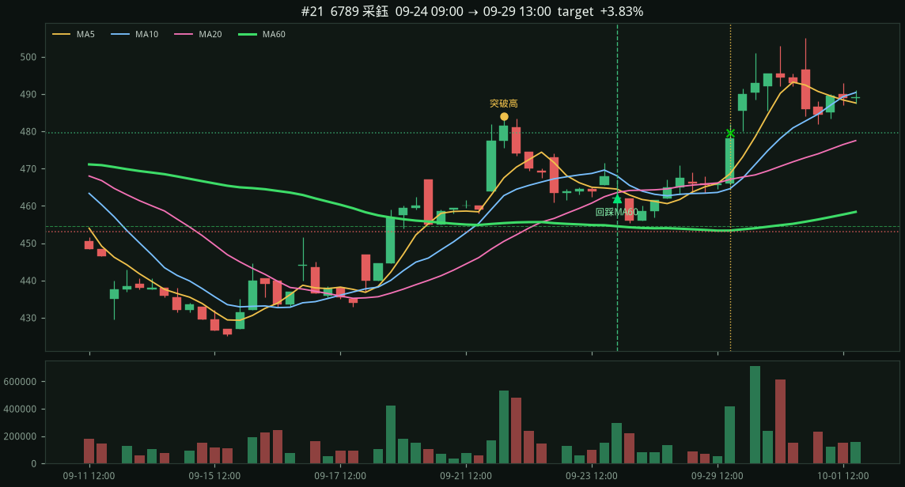
entry 68.20 stop 67.65 (−0.55) target 69.29 exit 67.65 stop -0.55 突破高 71.40 @ 09-29 09:00 MA60 67.87 破底深度 9.1% fwd +1d -0.59% +3d -0.73% +5d —
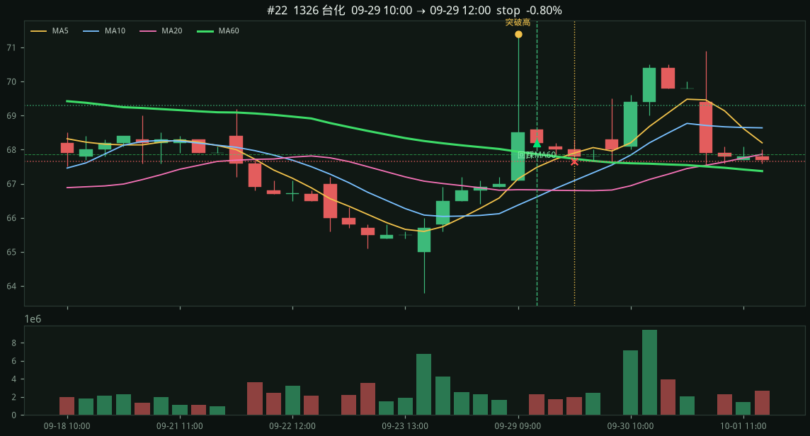
entry 284.00 stop 279.67 (−4.33) target 292.67 exit 279.67 stop -4.33 突破高 290.00 @ 09-30 09:00 MA60 280.51 破底深度 7.5% fwd +1d +0.88% +3d +0.53% +5d —
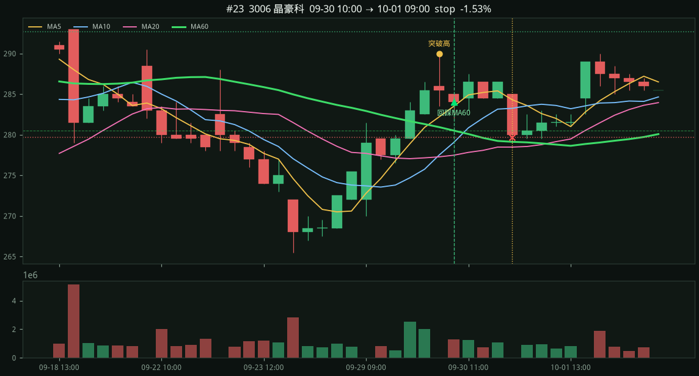
entry 121.00 stop 118.19 (−2.81) target 126.63 exit 122.00 open +1.00 突破高 123.00 @ 09-30 12:00 MA60 118.54 破底深度 4.9% fwd +1d +0.41% +3d — +5d —
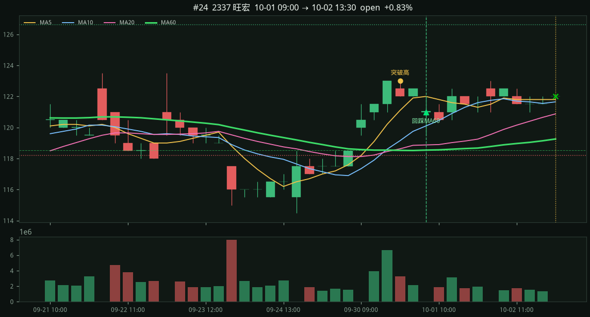
entry 58.90 stop 58.16 (−0.74) target 60.38 exit 59.50 open +0.60 突破高 60.20 @ 09-30 13:00 MA60 58.33 破底深度 4.1% fwd +1d -0.17% +3d — +5d —
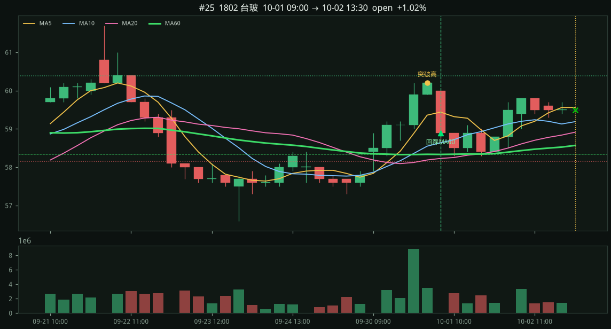
entry 187.00 stop 183.97 (−3.03) target 193.06 exit 186.50 open -0.50 突破高 191.50 @ 10-01 13:00 MA60 184.53 破底深度 5.0% fwd +1d -0.27% +3d — +5d —
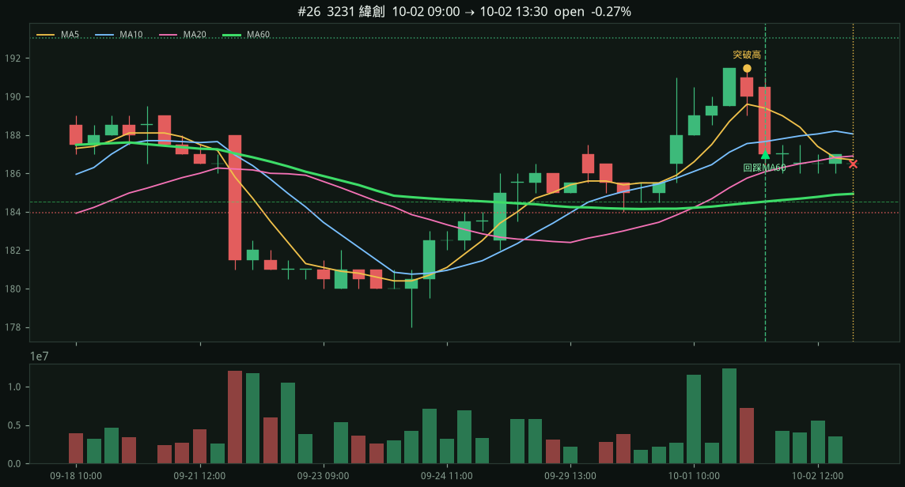
entry 949.00 stop 926.21 (−22.79) target 994.57 exit 961.00 open +12.00 突破高 973.00 @ 10-01 12:00 MA60 936.47 破底深度 14.8% fwd +1d +1.26% +3d — +5d —
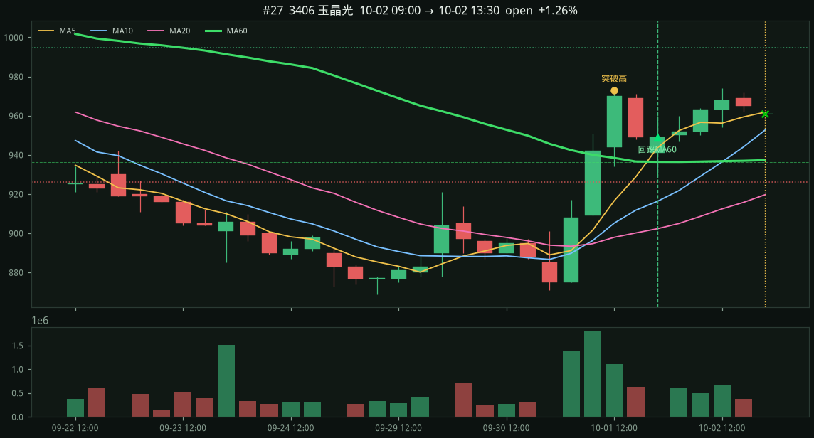
entry 58.60 stop 58.13 (−0.47) target 59.55 exit 59.55 target +0.95 突破高 72.50 @ 09-30 09:00 MA60 58.57 破底深度 11.2% fwd +1d +2.73% +3d — +5d —
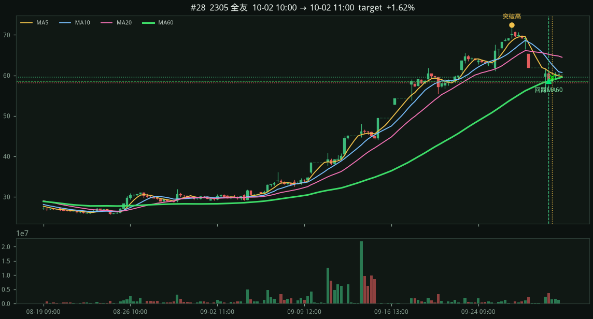
entry 549.00 stop 539.83 (−9.17) target 567.35 exit 547.00 open -2.00 突破高 559.00 @ 10-02 09:00 MA60 541.45 破底深度 11.8% fwd +1d -0.36% +3d — +5d —
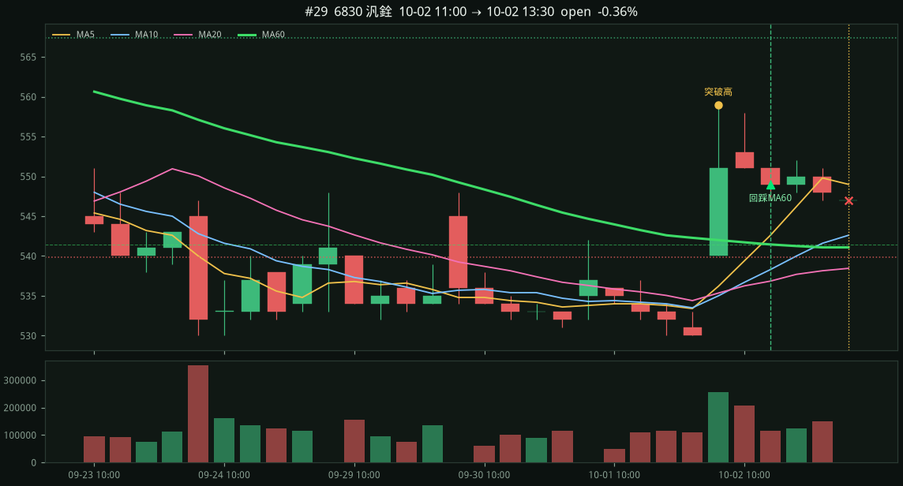